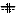

Gesucht ist das Einspannmoment am Knoten A.
| zurück | Inhalt | vor |
Gegeben sei folgendes System:
Gesucht ist das Einspannmoment am Knoten A.
Um ein neues Problem zu beginnen wird JBeam gestartet
bzw. der Menüpunkt 'File-new' angewäht. Alternativ kann
auch der entsprechende Button  aus der Toolbar verwendet werden.
aus der Toolbar verwendet werden.
Nun kann der Knoten A eingefügt werden. Da es sich um eine Volleinspannung handelt, wird der Menüpunkt 'Node - rxz constrained' gewählt. Mit der Maus wird die Position (X = -5 / Z = 0) angefahren, was mit der Koordinatenanzeige in der Statuszeile überprüft werden kann.
Der Knoten B wird analog an der Stelle (X = 5 / Z = 0) eingefügt.
Da es sich um ein einwertiges, vertikales Auflager handelt, ist
vorher 'Node - z constrained' zu wählen.
Alternativ kann ein freier Knoten (Symbol  )
erzeugt und durch Rechtsklick editiert werden. Die Eigenschaften
aller Knoten und Elemente können so angezeigt und überarbeitet werden.
Durch Änderung der Koordinaten können auch Knoten, die nicht auf
dem Raster liegen (z.B. X=10.125) einfach eingegeben werden.
)
erzeugt und durch Rechtsklick editiert werden. Die Eigenschaften
aller Knoten und Elemente können so angezeigt und überarbeitet werden.
Durch Änderung der Koordinaten können auch Knoten, die nicht auf
dem Raster liegen (z.B. X=10.125) einfach eingegeben werden.
Falls ein falsches Element wieder gelöscht werden soll, so wird
dieses zuerst ausgewählt. Dazu wird mit  bzw. 'Edit - select' in den 'Select'-Modus gewechselt, und das Objekt
anschließend angeklickt. Der aktuelle Modus wird rechts
in der Statuszeile angezeigt.
Alle selektierten Elemente erscheinen blau eingefärbt,
und können mit
bzw. 'Edit - select' in den 'Select'-Modus gewechselt, und das Objekt
anschließend angeklickt. Der aktuelle Modus wird rechts
in der Statuszeile angezeigt.
Alle selektierten Elemente erscheinen blau eingefärbt,
und können mit  gzw. 'Edit - delete'
gelöscht werden.
gzw. 'Edit - delete'
gelöscht werden.
Da nun alle benötigten Knoten angelegt sind, kann das Balkenelement eingefügt werden. Mit  bzw. 'Element - EBS beam' gelangt man in den Balkenmodus und kann durch Anklicken der Knoten das Element einfügen. Wenn der Knoten nicht gefunden wird, erscheint links in der Statuszeile eine Fehlermeldung, ansonsten wird eine Gummibandlinie zur Kontrolle angezeigt. Falls die Eingabe abgebrochen werden soll, betätigt man die rechte Maustaste.
Neben dem 'EBS beam' (Balkenelement mit Berücksichtigung von Schubverzerrungen) stehen noch weitere Elemente zur Verfügung:
 'EB beam' - klassischer Euler-Bernoulli-Stab ohne Berücksichtigung
des Schubes
'EB beam' - klassischer Euler-Bernoulli-Stab ohne Berücksichtigung
des Schubes 'Truss' - Stabelement für Fachwerke, das nur Normalkräfte aufnehmen
kann
'Truss' - Stabelement für Fachwerke, das nur Normalkräfte aufnehmen
kannAchtung: Schliessen an einen Knoten nur 'Truss'-Elemente an, so ist an diesem Knoten der Drehfreiheitsgrad festzuhalten. Ansonsten wird das System kinematisch.
Nun sollte der Zeichenbereich so aussehen:
Um die Gleichstreckenlast einzugeben, müssen die Eigenschaften (Properties)
des Balkens bearbeitet werden. Dazu kann dieser entweder selektiert und
dann mit  bzw. 'Edit - properties'
bearbeitet werden, oder als Abkürzung einfach mit der rechten Maustaste
anklicken.
bzw. 'Edit - properties'
bearbeitet werden, oder als Abkürzung einfach mit der rechten Maustaste
anklicken.
Im nun erscheinenden 'Edit EBBeam'-Dialog wird in das Feld 'vk' der Wert 5 eingetragen. Um später auch Zahlenwerte für den Balken zu erhalten, kann in das Feld Label auch ein beliebiger Name, z.B. 'Element 1' eingetragen werden.
Nun sollte der Zeichenbereich so aussehen:
Analog dazu wird den beiden Knoten das Label 'A' bzw. 'B' zugewiesen.
Die Eingabe des Problems ist hiermit abgeschlossen, und es kann mit 'Results - calculate static' die Lösung berechnet werden.
Um die Verschiebungsfigur zu erhalten, wird 'Results - show displacement' ausgewählt. Der Momentverlauf wird mit 'Results - show moment' aktiviert. Der M-Verlauf erscheint unübersichtlich groß, daher wird die Skalierung (moment scale) im Dialog 'Preferences - view' auf einen kleineren Wert - z.B. 0.2 - gesetzt.
Verschiebungsfigur:
Momentenverlauf:
Querkraftverlauf:
Die Ausgabe der Zahlenwerte erfolgt über das HTML-Format. Dazu wird 'Results - write to HTML-file' angewählt, und ein Dateiname angegeben (z.B. 'Problem1.html'). Diese Datei wird nun mit dem Web-Browser geöffnet. In drei Abschnitten werden für alle Elemente, die ein Label erhalten haben die Auflagerkräfte (support reactions), die Verschiebungsgrößen (nodal displacements) sowie die Schnittkräfte an den Enden (stress resultants) ausgegeben.
Unser gesuchtes Einspannmoment kann entweder als 'M' am Knoten A oder als 'Mi' des Elementes 1 zu -29,167 kN abgelesen werden.
Alternativ zur Ausgabe in eine Datei kann man durch 'edit - show information'
bzw. in den 'Info'-Modus wechseln.
Durch Anklicken von Knoten und Elementen erhält man die Zahlenwerte
der Ergebnisse des entsprechenden Objektes. Hiermit können auch
Ergebnisgrössen von Objekten abgefragt werden, die kein Label
erhalten haben.

Das System kann vor Verlassen des Programmes mit  bzw. 'File - save' abgespeichert werden.
bzw. 'File - save' abgespeichert werden.
| zurück | Inhalt | vor |